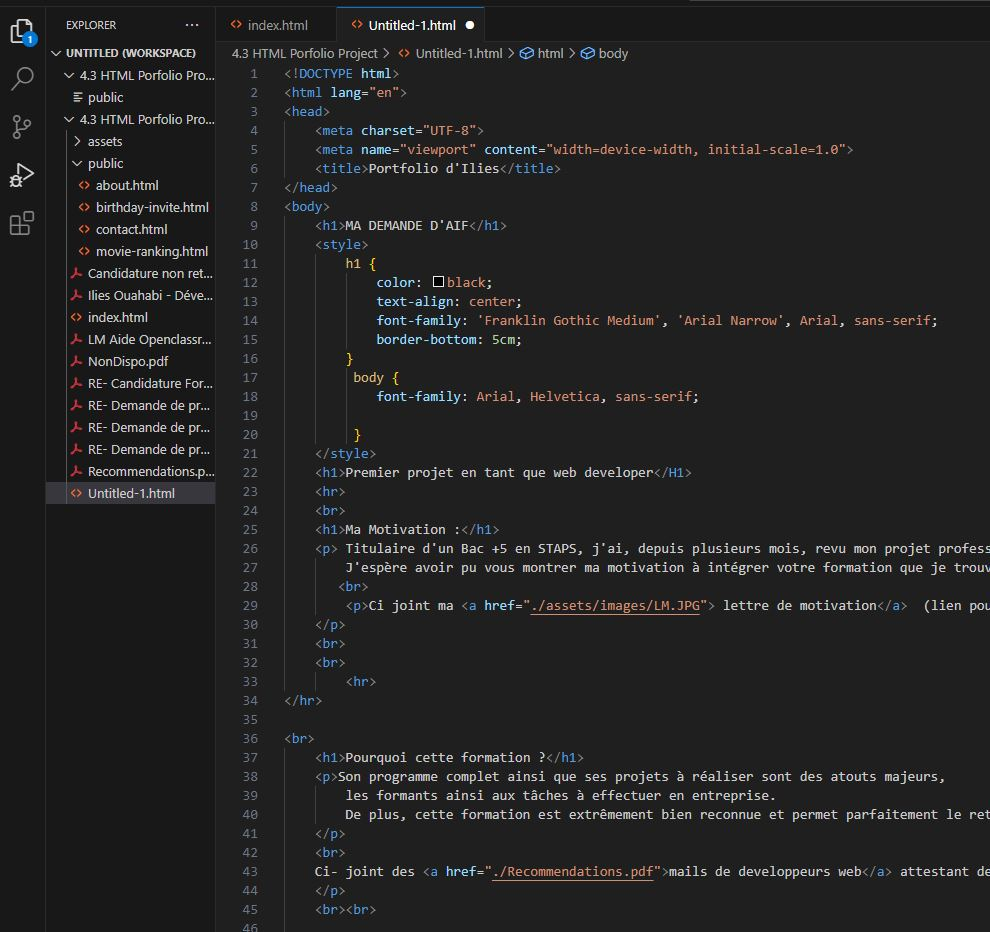

Titulaire d'un Bac +5 en STAPS, j'ai, depuis plusieurs mois, revu mon projet professionnel et souhaite réellement faire du développement web mon métier.
Je suis surmotivé à l'idée d'intégrer la formation développeur web d'OpenClassroom car celle-ci me semble complète et extrêmement pédagogique. De plus, motivé à l'idée de mener à bien ce-dit projet professionnel, je suis actuellement en train de réaliser la formation "Become a Full-Stack Web Developer" du Dr. Angela Yu, en plus d'autres formations réalisées au préalable, afin d'intégrer les bases du métier ! J'espère avoir pu vous montrer ma motivation à intégrer votre formation que je trouve palpitante
Ci joint ma lettre de motivation (lien pour la télécharger ici)
Son programme complet ainsi que ses projets à réaliser sont des atouts majeurs, les formants ainsi aux tâches à effectuer en entreprise. De plus, cette formation est extrêmement bien reconnue et permet parfaitement le retour à emploi comme peuvent en témoigner de nombreuses personnes du milieu !
Malheureusement, aucune autre formation de développeur web n'est actuellement prévue en plus de celles auquelles j'ai deja postulé, seule l'une d'entre elle m'a refusée lors de ma tentative d'admission après avoir passé entretiens et tests. Quant au autres, elles furent toutes complètes lorsque j'ai tenté de postuler, bien que la date finale pour les inscriptions furent encore loin d'être passées.
Ci-joint quelques uns des mails de refus de candidature et de non disponibilité de places aux formations
Voici un site web simple et fonctionnel que j'ai pu coder en autonomie. Bien que peu esthetique, il reste assez complexe à réaliser pour un débutant. Je suis fier d'avoir réussi ce premier pas dans le monde du developpement web, et espère avoir pu vous démontrer ma motivation et ma capacité à apprendre par moi-même. Ce projet illustre mon désir de progresser dans le domaine du développement et n'est que le premier d'une longue série j'espère
Ci-dessous une partie du code source du site afin de vous donner une idée de mon investissement :

{kind=link}